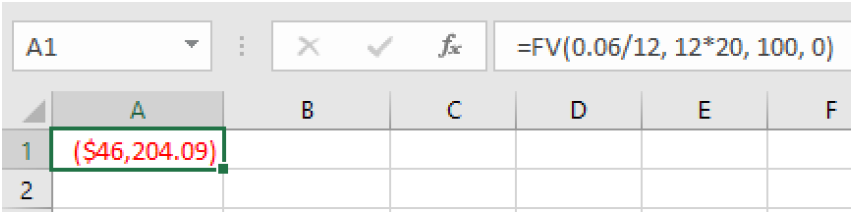
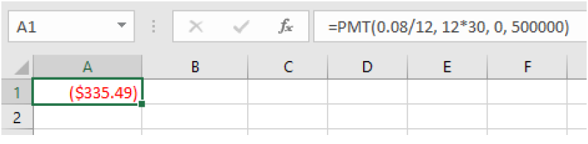

Subsection 3.3.2 Savings Plan Formulas
To make calculations for savings plans using a spreadsheet, we can use the =FV formula we have already used. This time for regular payments we will use the field for payment amount. If we are not making an initial deposit, the present value will be zero.
Here is the future value formula again:
Future Value Spreadsheet Formula.
=FV(rate per period, number of periods, payment amount, present value)
- rate per period
is the interest rate per compounding period, \(r/n\)
- number of periods
is the total number of periods, \(n*t\)
- payment amount
is the amount of regular payments
- present value
is the initial principal. If none, enter \(0\)
The mathematical formulas are shown below. If you want to know how we got the formula, it is derived at the end of the chapter.
Savings Plan Formulas.
\begin{equation*}
A=\frac{d\left(\left(1+\frac{r}{n}\right)^{nt}-1\right)}{\left(\frac{r}{n}\right)} \text{ or } d=\frac{A\left(\frac{r}{n}\right)}{\left(\left(1+\frac{r}{n}\right)^{nt}-1\right)}
\end{equation*}
- A
is the balance in the account after n years (future value)
- d
is the regular deposit (or payment amount each month, quarter, year, etc.)
- r
is the annual interest rate in decimal form
- n
is the number of compounding periods in one year
- t
is the number of years
If the compounding frequency is not explicitly stated, assume there are the same number of compounds in a year as there are deposits made in a year.
If you make your deposits every year, use yearly compounding, \(n=1\text{.}\)
If you make your deposits every quarter, use quarterly compounding, \(n=4\text{.}\)
If you make your deposits every month, use monthly compounding, \(n=12\text{,}\) etc.
To see how both of these methods work, let’s look at an example.
Example 3.3.1.
A traditional individual retirement account (IRA) is a special type of retirement account in which the money you invest is exempt from income taxes until you withdraw it. If you deposit $100 each month into an IRA earning 6% APR, how much will you have in the account after 20 years? How much will you have earned in interest? What percentage of the balance is interest?
Solution.
To use a spreadsheet, we will use =FV because we want to know the balance in the future. We enter 100 for the payment amount and 0 for the present value:
=FV(0.06/12, 12*20, 100, 0)
which gives a result of $46,204.09.

Remember that the output of the formula gives the answer with the opposite sign as the principal and payments. For our purposes we will ignore the signs. To use the formula, we use the one solved for A, since we want to know the final amount.
\(d=\$100\text{,}\) the monthly deposit
\(r=0.06\text{,}\) 6% annual rate
\(n=12\text{,}\) since we’re doing monthly deposits, we’ll compound monthly
\(t=20\text{,}\) we want the amount after 20 years
Putting this into the equation we have:
\begin{align*}
A\amp=\frac{100\left(\left(1+\frac{0.06}{12}\right)^{12\cdot 20}-1\right)}{\left(\frac{0.06}{12}\right)}\\
\amp=\frac{100\left((1.005)^{240}-1\right)}{(0.005)}\\
\amp\approx \$46.204.09
\end{align*}
With U.S. dollars we round to the nearest cent. The account will grow to $46,204.09 after 20 years.
To find the amount of interest earned, calculate the total of all your deposits.
\begin{equation*}
\$100(20)(12)=\$24,000
\end{equation*}
The difference between the total amount and the deposits is the interest earned.
\begin{equation*}
\$46,204.09-\$24,000=\$22,204.09
\end{equation*}
The total amount of interest you earned was $22,204.09.
To find the percentage of the balance that is interest we will divide the interest by the total balance.
\begin{equation*}
\frac{\$22,204.09}{\$46,204.09}\approx 0.4810
\end{equation*}
or 48.1%. After 20 years 48.1% of the balance is from interest.
Now here’s an example with an initial deposit and monthly deposits. We can do this with the spreadsheet formula.
Example 3.3.2.
You want to jumpstart your saving by depositing $1500 from your tax return and then deposit $150 every month into an account that earns 5.5% APR compounded monthly. How much will you have in the account after 30 years?
Solution.
Using the spreadsheet formula, we can enter an initial deposit and a monthly payment. We enter
=FV(0.055/12, 12*30, 150,1500)
and get a result of $144,822.87.
Subsection 3.3.3 Finding Payment Amounts Usings Spreadsheets and Formulas
Another important thing we can calculate is how much we need to save in each period to have a specified amount in the future. Say you want to achieve a certain amount for retirement or for your kids’ college.
The mathematical formula for this is the one solved for d, the payment amount, above. There is a new spreadsheet formula to calculate payments, =PMT, that we will introduce now.
Payment Spreadsheet Formula.
=PMT(rate per period, number of periods, present value, future value)
- rate per period
is the interest rate per compounding period, \(r/n\)
- number of periods
is the total number of periods, \(n*t\)
- present value
is the amount deposited or principal, \(P\)
- future value
is the amount you want in the future, \(A\)
Here is an example of a retirement goal calculated with a spreadsheet and the formula.
Example 3.3.3.
You want to have half a million dollars in your account when you retire in 30 years. Your retirement account earns 8% APR. How much do you need to deposit each month to meet your retirement goal?
Solution.
To calculate this with a spreadsheet, we will use the =PMT function and enter 0 for the present value and $500,000 for the future value. We cannot enter commas within the numbers however, because spreadsheets use commas to separate the inputs. We enter:
=PMT(0.08/12, 12*30, 0, 500000)
and get a result of $335.49.

To see how this works with the formulas, we use the one solved for d, the regular deposit amount.
\(r=0.08\text{,}\) 8% annual rate
\(n=12\text{,}\) since we’re depositing monthly
\(t=30\text{,}\) 30 years
\(A=\$500,000\text{,}\) the amount we want to have in 30 years
\begin{align*}
d\amp=\frac{A\left(\frac{r}{n}\right)}{\left(\left(1+\frac{r}{n}\right)^{nt}-1\right)}\\
\amp=\frac{500000\left(\frac{0.08}{12}\right)}{\left(\left(1+\frac{0.08}{12}\right)^{12\cdot 30}-1\right)}\\
\amp\approx\$335.49
\end{align*}
So, you would need to deposit $335.49 each month to have $500,000 in 30 years if your account earns 8% interest.
Activity 3.3.3.
Use a spreadsheet to work on these problems. Write down the syntax to show your work. Answer each question in a complete sentence.
Jackie is 34 years old. She would like to have one million dollars in her retirement account when she is 65 years old.
How much would she need to deposit every month into an account with an APR of 7.25%, compounded monthly, to achieve her goal?
If Jackie had started the account at age 21 (same APR), how much would she need to deposit every month to achieve her goal?
If Jackie had started the account at age 21 (same APR) and deposited the amount calculated in Exercise 1 every month, what would the balance be when she retired at age 65?
How much would Jackie need to deposit as a lump sum at age 21 with the same APR (without making another payment) to have a million dollars at age 65?
Solution.
-
=PMT(0.0725/12, (65-34)*12, 0, 1000000)
= $719.22
She would need to deposit $719.22 each month to have a million dollars when she retires.
-
=PMT(0.0725/12, (65-21)*12, 0, 1000000)
= $262.04
She would need to deposit $262.04 each month to have a million dollars when she retires.
-
=FV(0.0725/12, (65-21)*12, 719.22)
= $2,744,713.35
She would have over $2.7 million dollars when she retired.
-
=PV(0.0725/12, (65-21)*12, 0, 1000000)
= $41,568.93
She would need to deposit $41,568.93 at age 21 to have a million dollars when she retires.
A note about rounding.
If you are using the formulas and round during intermediate steps you will probably have some roundoff error. For this reason, we enter the whole expression into the calculator and do not show the intermediate steps.
One of the challenges in this chapter is choosing the correct formula or spreadsheet function. Read this next example and see if you can determine which formula to use.
Example 3.3.4.
A more conservative investment account pays 3% APR. If you deposit $5 a day into this account, how much will you have after 10 years? What amount and percentage are from interest?
Solution.
In this example we are given the regular deposit amount and we are looking for the future value. In a spreadsheet we use the =FV function and enter:
=FV(0.03/365, 365*10, 5,0)
which gives a result of $21,282.07.
To use a mathematical formula, we choose the one solved for A:
\(d=\$5\text{,}\) the daily deposit
\(r=0.03\text{,}\) 3% annual rate
\(n=365\text{,}\) since we’re doing daily deposits, we’ll compound daily
\(t=10\text{,}\) we want the amount after 10 years
\begin{align*}
A\amp=\frac{5\left(\left(1+\frac{0.03}{365}\right)^{365\cdot 10}-1\right)}{\left(\frac{0.03}{365}\right)}\\
\amp\approx\$21,282.07
\end{align*}
To find the amount of interest, we will calculate how much was deposited in the account. Since you put in $5 a day for 10 years we get
\begin{equation*}
\$5(365)(10)=\$18,250\text{.}
\end{equation*}
The interest earned is \(\$21,282.07-\$18,250=\$3,032.07\text{.}\)
To find the percentage we divide by the total balance to get \(\frac{\$3,032.07}{\$21,282.07}\approx0.1425\) or 14.25%.
After 10 years, about 14.25% of the account is interest.
Subsection 3.3.5 Deriving the Savings Plan Formula (Optional)
If you are interested in where the savings plan formula came from, we will explain it here. A savings plan with regular payments can be described recursively. Recall that basic compound interest follows from the relationship for each compound period.
\(A=P\left(1+\frac{r}{n}\right)\)
For a savings plan, we need to add a deposit, d, to the account with each compounding period:
\(A=P\left(1+\frac{r}{n}\right)+d\)
Taking this equation from recursive form to explicit form is a bit trickier than with compound interest. It will be easiest to see by working with an example rather than working in general.
Suppose we will deposit $100 each month into an account paying 6% APR. We assume that the account is compounded with the same frequency as we make deposits unless stated otherwise.
In this example:
\(r=0.06\text{,}\) 6% APR
\(n=12\text{,}\) 12 compounds/deposits per year
\(d=\$100\text{,}\) our deposit per month
Writing out the recursive equation gives where A is exchanged with \(P_{m}\) where m is the number of compounding periods.
\(P_{m}=\left(1+\frac{0.06}{12}\right)P_{m-1}+100=(1.005)P_{m-1}+100\)
Assuming we start with an empty account, we can begin using this relationship:
\(P_{0}=0\)
\(P_{1}=(1.005)P_{0}+100=100\)
\(P_{2}=(1.005)P_{1}+100=(1.005)(100)+100=100(1.005)+100\)
\(P_{3}=(1.005)P_{2}+100=(1.005)(100(1.005)+100)+100=100(1.005)^{2}+100(1.005)+100\)
Continuing this pattern, after m deposits, we’d have saved:
\(P_{m}=100(1.005)^{m-1}+100(1.005)^{m-2}+...+100(1.005)+100\)
In other words, after \(m\) months, the first deposit will have earned compound interest for \(m-1\) months. The second deposit will have earned interest for \(m-2\) months. Last month’s deposit would have earned only one month worth of interest. The most recent deposit will have earned no interest yet.
This equation leaves a lot to be desired, though – it doesn’t make calculating the ending balance any easier! To simplify things, multiply both sides of the equation by 1.005:
\(1.005P_{m}=1.005[100(1.005)^{m-1}+100(1.005)^{m-2}+...+100(1.005)+100]\)
Distributing on the right side of the equation gives
\(1.005P_{m}=100(1.005)^{m}+100(1.005)^{m-1}+...+100(1.005)^{2}+100(1.005)\)
Now we’ll line this up with like terms from our original equation, and subtract each side
\(1.005P_{m}=100(1.005)^{m}+100(1.005)^{m-1}+...+ 100(1.005)\)
\(P_{m} = 100(1.005)^{m-1}+...+ 100(1.005)+100\)
Almost all the terms cancel on the right side when we subtract, leaving
\(1.005P_{m}-P_{m}=100(1.005)^{m}-100\)
Solving for \(P_{m}\)
\(0.005P_{m}=100((1.005)^{m}-1)\)
\(P_{m}=\frac{100(1.005)^{m}-100}{0.005}\)
Replacing \(P_{m}\) with \(A\) (Future Value), \(m\) months with \(12t\text{,}\) where \(t\) is measured in years, gives
\(A=\frac{100(1.005)^{12t}-1}{0.005}\)
Recall \(0.005\) was \(r/n\) and 100 was the deposit \(d\text{.}\) The value 12 as \(n\text{,}\) the number of deposits each year. Generalizing this result, we get the savings plan formula solved for \(A\text{.}\) The second formula uses algebra to rearrange the formula to be solved for \(d\text{.}\)
Savings Plan Formulas.
\begin{equation*}
A=\frac{d\left(\left(1+\frac{r}{n}\right)^{nt}-1\right)}{\left(\frac{r}{n}\right)} \text{ or } d=\frac{A\left(\frac{r}{n}\right)}{\left(\left(1+\frac{r}{n}\right)^{nt}-1\right)}
\end{equation*}
- A
is the balance in the account after n years (future value)
- d
is the regular deposit (or payment amount each month, quarter, year, etc.)
- r
is the annual interest rate in decimal form
- n
is the number of compounding periods in one year
- t
is the number of years
If the compounding frequency is not explicitly stated, assume there are the same number of compounds in a year as there are deposits made in a year